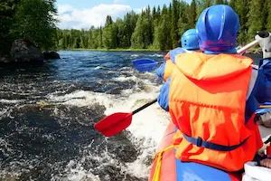

Ready to experience the thrill of a lifetime? At Dry Oar Rafting Co., we specialize in creating unforgettable whitewater adventures for explorers of all skill levels. Whether you're seeking a family-friendly trip or a heart-pounding expedition through raging rapids, our experienced guides ensure every moment is safe, exciting, and packed with memories you'll treasure forever. Dive into adventure today!
Dry Oar Rafting Co.
History
Established in 1998, Dry Oar Rafting Co. began with a small team of adventure enthusiasts passionate about exploring the rugged beauty of nature. What started as a humble operation with a single raft and a dream has grown into one of the most trusted names in whitewater rafting.
Over the years, we’ve navigated countless rivers, forged unforgettable memories, and shared the thrill of the rapids with adventurers from around the globe. Our commitment to safety, sustainability, and creating life-changing experiences has remained our top priority. At Dry Oar Rafting Co., every journey is a story waiting to be written.
Adventure Awaits You!